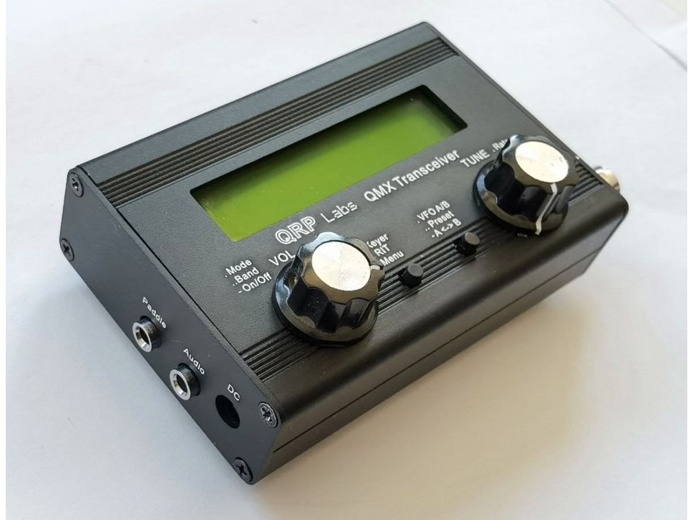

EM87 | Eastern Kentucky, USA
KR4BJN
kilo • romeo • four • bravo • juliett • november
kentucky • redbud • four • bluegrass • jamboree • nomad
-·- ·-· ····- -··· ·--- -·
Amateur Radio Interests
Gear
Clubs

Listen to "What hath God wrought!" in CW (Morse code)
Practice Oscillator
left click / tap
(hover here)
right click
"Dits" (or "dots") are the short Morse sound → ·
"Dahs" (or "dashes") are the long Morse sound → -
Letters
Adi-dah
Bdah-di-di-dit
Cdah-di-dah-dit
Ddah-di-dit
Edit
Fdi-di-dah-dit
Gdah-dah-dit
Hdi-di-di-dit
Idi-dit
Jdi-dah-dah-dah
Kdah-di-dah
Ldi-dah-di-dit
Mdah-dah
Ndah-dit
Odah-dah-dah
Pdi-dah-dah-dit
Qdah-dah-di-dah
Rdi-dah-dit
Sdi-di-dit
Tdah
Udi-di-dah
Vdi-di-di-dah
Wdi-dah-dah
Xdah-di-di-dah
Ydah-di-dah-dah
Zdah-dah-di-dit
Numbers & Symbols
0dah-dah-dah-dah-dah
1di-dah-dah-dah-dah
2di-di-dah-dah-dah
3di-di-di-dah-dah
4di-di-di-di-dah
5di-di-di-di-dit
6dah-di-di-di-dit
7dah-dah-di-di-dit
8dah-dah-dah-di-dit
9dah-dah-dah-dah-dit
.di-dah-di-dah-di-dah
,dah-dah-di-di-dah-dah
?di-di-dah-dah-di-dit
/dah-di-di-dah-dit
!dah-di-dah-di-dah-dah
;dah-di-dah-di-dah-dit
:dah-dah-dah-di-di-dat
-dah-di-di-di-di-dah
'di-dah-dah-dah-dah-dit
errordi-di-di-di-di-di-di-dit
Band Conditions